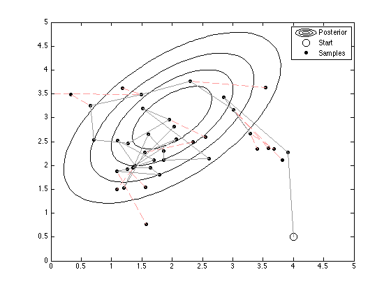

Contents
mhexample.m
From A First Course in Machine Learning, Chapter 4. Simon Rogers, 01/11/11 [simon.rogers@glasgow.ac.uk] Example of Metropolis-Hastings
clear all;close all; path(path,'../utilities');
Define the true density as a Gaussian
mu = [2;3]; si = [1 0.6;0.6 1];
Initialise sampler
x = rand(2,1); x = [4;0.5];
Do N steps
fig1 = figure(1);hold off % Plot the contours [Xv,Yv] = meshgrid(0:0.1:5,0:0.1:5); const = -log(2*pi) - log(det(si)); temp = [Xv(:)-mu(1) Yv(:)-mu(2)]; Probs = const - 0.5*diag(temp*inv(si)*temp'); contour(Xv,Yv,reshape(exp(Probs),size(Xv)),'k'); hold on plot(x(1),x(2),'ko','markersize',10); N = 40; % Increase this to generate more samples jump_si = [0.5 0;0 0.5]; % Covariance of jumping Gaussian - try varying this and looking at the proportion of rejections/acceptances Naccept = 0; % Following lines make a movie uncomment them and the lines labels movie % below % winsize = get(fig1,'Position'); % winsize(1:2) = [0 0]; % numframes = N; % A = moviein(numframes,fig1,winsize); for n = 1:N % Propose a new value xs = gausssamp(x,jump_si,1)'; % Using a Gaussian jump, jump ratios cancel % Compute ratio of densities (done in log space, constants cancel) pnew = -0.5*(xs-mu)'*inv(si)*(xs-mu); pold = -0.5*(x-mu)'*inv(si)*(x-mu); plot(xs(1),xs(2),'ko','markersize',5,'markerfacecolor','k'); if rand<=exp(pnew-pold) % Accept the sample plot([x(1) xs(1)],[x(2) xs(2)],'k','color',[0.6 0.6 0.6]); x = xs; Naccept = Naccept + 1; else plot([x(1) xs(1)],[x(2) xs(2)],'r--','color',[1 0.6 0.6]); end % Movie % A(:,n) = getframe(fig1,winsize); end legend('Posterior','Start','Samples') fprintf('\nDashed lines show rejections'); fprintf('\nAcceptance ratio: %g',Naccept/N);
Dashed lines show rejections Acceptance ratio: 0.675
Watch the movie
movie(fig1,A,30,3,winsize);